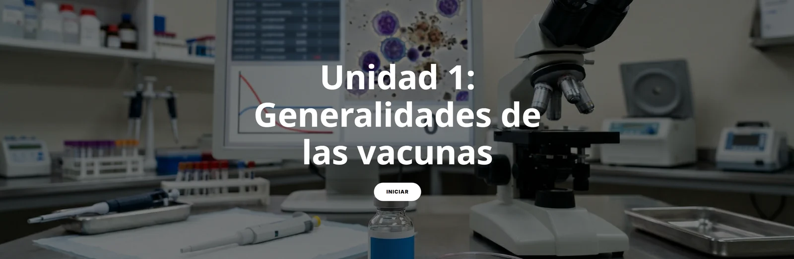
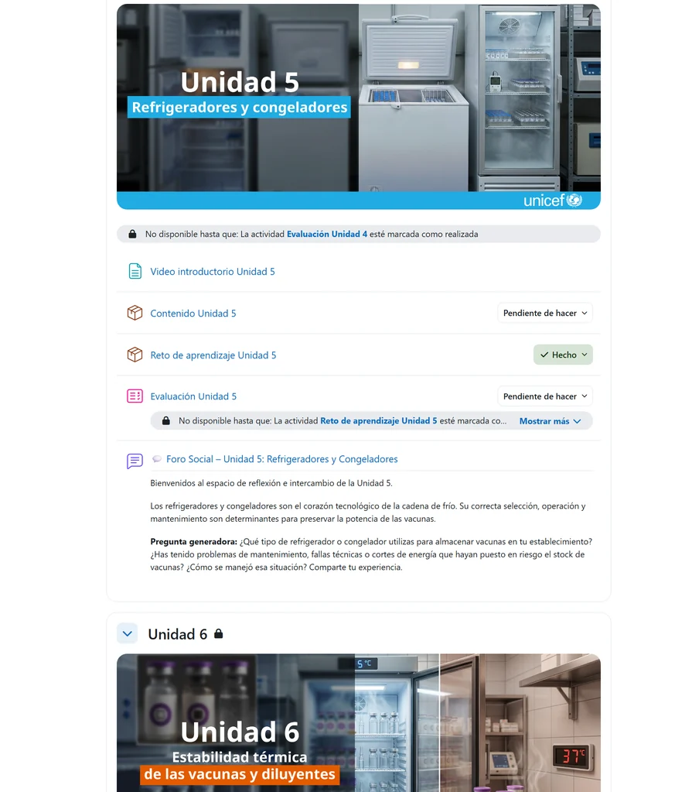
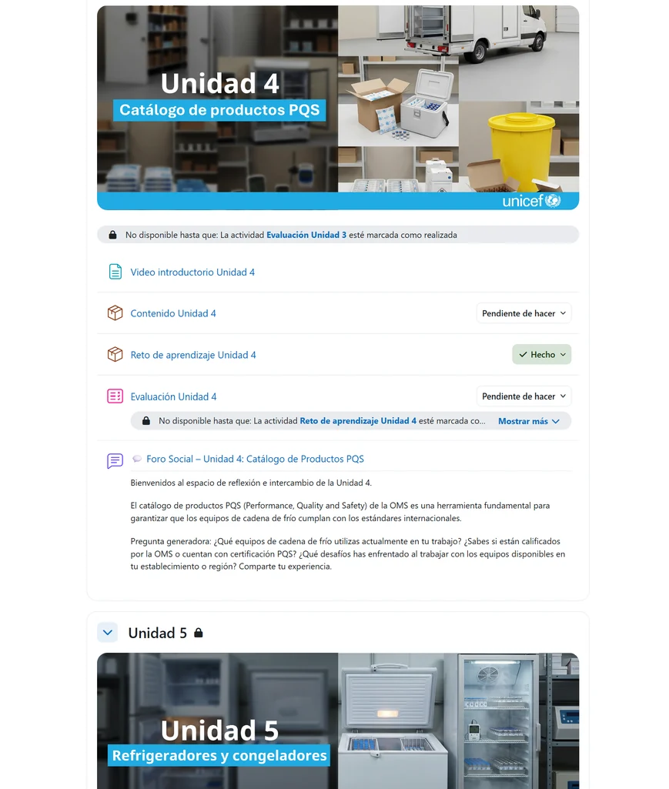
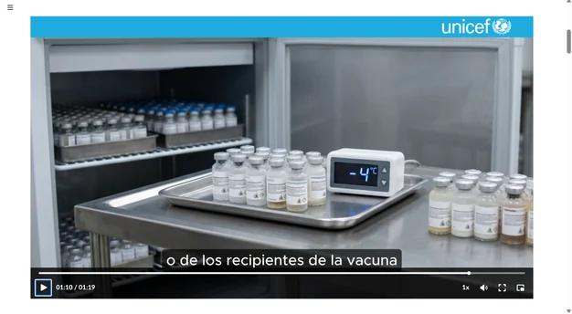
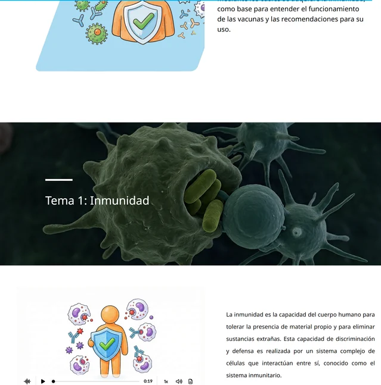
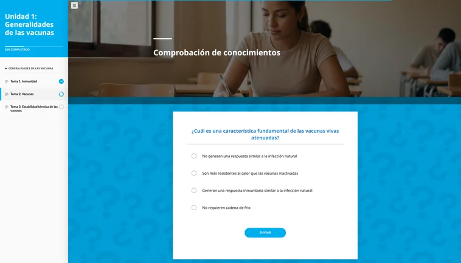
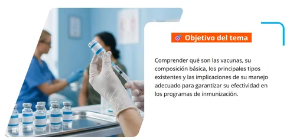
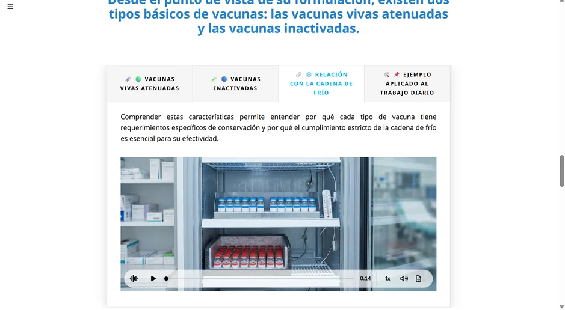
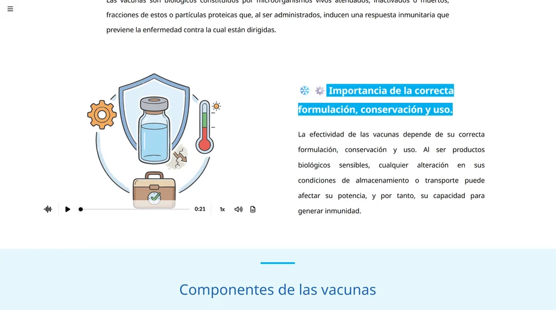

Objetivo sanitario
Garantizar que el personal técnico mantenga los estándares óptimos de temperatura, almacenamiento y manipulación de biológicos en todos los niveles de la red de salud.
COOPERACIÓN INTERNACIONAL · SALUD PÚBLICA & MOODLE
Gestión de la Cadena de Frío y Manejo Adecuado de Vacunas.
Se desarrolló un curso virtual para fortalecer las capacidades técnicas sobre la gestión de la cadena de frío y la conservación adecuada de vacunas para UNICEF y el personal de salud. Además, se diseñó y organizó la estructura del curso dentro del aula virtual Moodle, integrando contenidos e-learning interactivos, recursos de aprendizaje, evaluaciones normativas y herramientas de apoyo para las personas participantes.

01 / IMPACTO Y CONTENIDOS TÉCNICOS
Garantizar que el personal técnico mantenga los estándares óptimos de temperatura, almacenamiento y manipulación de biológicos en todos los niveles de la red de salud.
Estructuración de módulos formativos, hojas de cálculo de control térmico, manuales de termos y refrigeración, infografías técnicas y foros de consulta.
Módulos autoformativos con seguimiento de progreso, simulaciones de control de temperatura y bancos de preguntas para evaluación de competencias técnicas.
02 / AULA VIRTUAL EN MOODLE
Vistas del aula virtual implementada para UNICEF, con contenidos organizados por módulos de aprendizaje y evaluaciones.


03 / MATERIALES GRÁFICOS Y PEDAGÓGICOS
Recursos multimedia diseñados para facilitar la comprensión de conceptos complejos de termodinámica, cadena de frío y manejo de biológicos.





